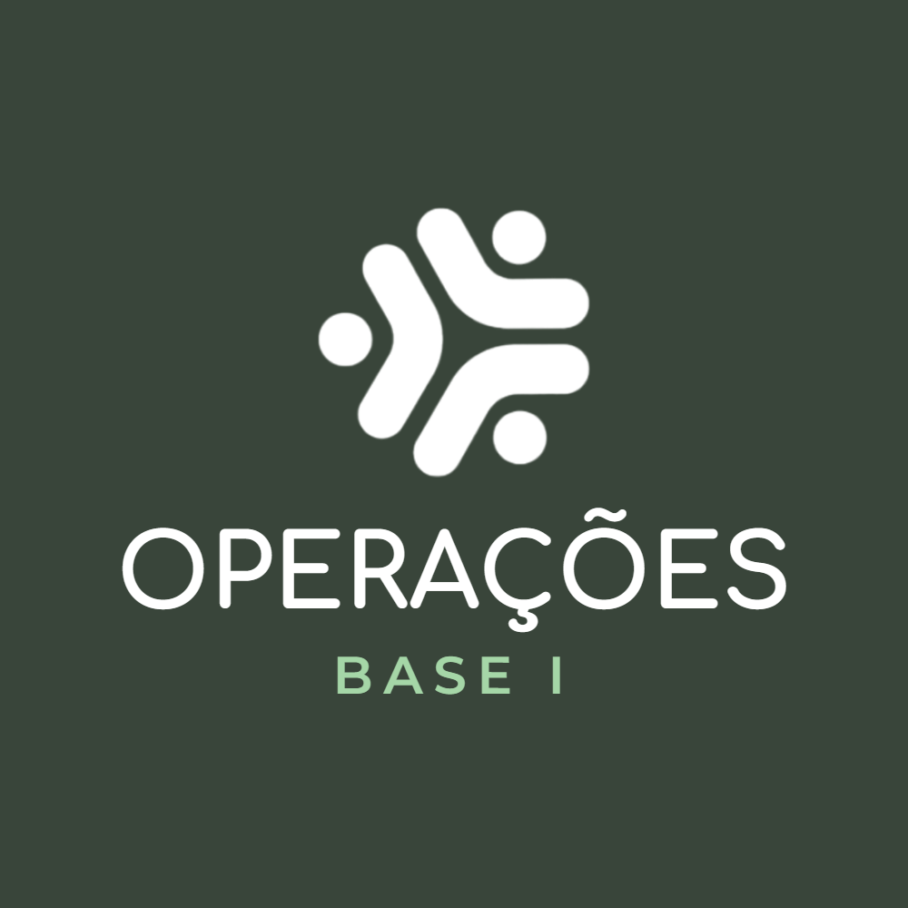

Template · Atendimento
WhatsApp Business
Avatares por setor e mensagens prontas para a equipe usar sem escorregar do tom. O produtor não fecha aplicação por post — fecha por indicação e conversa direta.
Documento de repasse à equipe · configuração de perfil e textos oficiais

01 · A regra
O número é do cargo, não da pessoa
O cliente salva um número e ele continua valendo depois de qualquer troca de equipe. Some o "manda no particular do fulano", some o cliente órfão quando alguém sai, e o histórico da conversa fica na empresa — onde deve estar. Em troca, exige disciplina: quem assume a função assume a linha, com o mesmo perfil e as mesmas respostas prontas.
Um por setor
Operações da Base I e Financeiro têm cada um sua linha, além do número principal da casa. Não se cria número novo para pessoa nova.
O chip migra
Na passagem de função, o chip e a conta migram com o perfil intacto: mesmo nome, mesmo avatar, mesmas respostas rápidas.
Perfil sem nome
O perfil se chama pelo setor. Nome de colaborador no perfil transforma linha da empresa em linha particular.
Nada em paralelo
Assunto de trabalho no WhatsApp pessoal quebra a regra inteira: o cliente volta a depender de quem atendeu, não da empresa.
02 · Identidade
Avatar por setor
Mesma marca, setor gravado. Na lista de conversas o cliente distingue de longe qual linha da Opp está falando — e a equipe encontra o contato certo sem abrir três fichas.
Comercial · a casa
(66) 99232-0821

Operações · Base I
(66) 99245-6863
Financeiro
(66) 99245-7097
Formato
Quadrado exportado em 1000 × 1000 px; o WhatsApp recorta em círculo. Todo o conteúdo dentro do círculo, com folga nas beiradas.
Composição
Símbolo do Grupo Opp+ no topo, nome do setor abaixo em Comfortaa. Sem foto, sem aeronave, sem moldura.
Cor por setor
Operações em verde escuro #39453A, Financeiro em cinza #333333 — as duas da paleta oficial. Setor novo recebe a próxima cor da paleta, nunca uma cor inventada.
O comercial
É a casa, não um setor: fundo branco com o símbolo colorido e sem nome gravado. Os setores são portas internas; ele é a porta da frente, e por isso não se rotula.
Administrativo
Avatar pronto e guardado. O setor não tem linha própria hoje — quando tiver, entra sem redesenho, na cor esmeralda #219653 já reservada.
Nome do setor
Curto e sem cargo: "Operações · Base I", "Financeiro". Se não couber em duas linhas, o nome está longo demais.
!Em miniatura de lista, o que separa as linhas é a cor e o símbolo — o texto só se lê ao abrir a conversa ou na busca. Por isso cada setor tem sua cor da paleta; o nome gravado é reforço, não a única pista.
03 · Perfil
Como configurar a conta
Categoria
Agricultura · Serviços agrícolas
Descrição
Aplicação aérea com precisão e gestão de aeronaves para o produtor do Centro-Oeste. Trabalho bem feito, safra após safra.
Endereço
Rua Santa Catarina de Alexandria, 2127 · Parque Universitário · Sorriso/MT · CEP 78893-126
Horário
Segunda a sexta, 7h30 às 18h
Site
www.grupooppmais.com.br
Quatro passos
1 · Foto do perfil: use o avatar do setor (seção 02), nunca uma foto pessoal nem o logotipo solto.
2 · Ative catálogo e cadastre SAE e OACO — sem preço, só descrição; valor vai na proposta.
3 · Configure saudação e ausência com os textos deste documento, e cadastre as respostas rápidas.
4 · Link do site na bio: é a validação de quem recebeu a indicação e vai conferir a empresa.
SAEOpp Aviação Agrícola
Serviços Aeroagrícolas Especializados
Aplicação aérea de defensivos, fertilizantes e sementes, com planejamento, precisão e conformidade. Tempo é a nossa moeda de troca.
OACOOpp Gestão de Ativos
Operador Aeroagrícola Compartilhado
Gestão completa da sua aeronave: a agenda continua exclusivamente sua e o avião gera receita quando estiver disponível.
04 · Textos de cada linha
Descrição e saudação, número a número
iO campo Descrição do perfil aceita 139 caracteres — cabe o que a linha faz, não o roteiro inteiro. Por isso a apresentação dos outros contatos vai na saudação, que é a primeira coisa que o cliente lê.
Comercial · a casa
O número que os clientes já têm salvo há anos
Descrição do perfil · 119/139
Aplicação aérea e gestão de aeronaves para o produtor do Centro-Oeste. Primeiro contato, dúvidas e pedidos de proposta.
Saudação
Olá! Você chegou ao WhatsApp oficial da Opp — Aviação Agrícola e Gestão de Ativos.
Aqui atendemos primeiro contato, dúvida sobre serviço e pedido de proposta.
Se o seu assunto já for de um setor, temos linha direta:
• Operações · Base I — agenda de voo, área e andamento da aplicação: (66) 99245-6863
• Financeiro — boleto, nota fiscal e comprovante: (66) 99245-7097
Site: www.grupooppmais.com.br
E-mail: contato@grupooppmais.com.br
Me conte sua região e o que precisa que já te retornamos.
Operações · Base I
A linha de quem está com o serviço em andamento
Descrição do perfil · 115/139
Linha de Operações · Base I: agenda de voo, área a aplicar, janela de aplicação e andamento do serviço. Sorriso/MT.
Saudação
Olá! Aqui é a linha de Operações da Opp — Base I.
Neste número tratamos agenda de voo, área a aplicar, janela de aplicação e andamento do serviço.
Se o seu assunto for outro, a linha certa é:
• Financeiro — boleto, nota fiscal e comprovante: (66) 99245-7097
• Comercial — atendimento geral e proposta: (66) 99232-0821
Site: www.grupooppmais.com.br
E-mail: contato@grupooppmais.com.br
Pode mandar sua fazenda e o talhão que já verificamos.
Financeiro
Boleto, nota fiscal, comprovante e prazo
Descrição do perfil · 116/139
Linha do Financeiro da Opp: boleto e 2ª via, nota fiscal, comprovante de pagamento e prazos. Seg a sex, 7h30 às 18h.
Saudação
Olá! Aqui é o Financeiro da Opp.
Neste número tratamos boleto e 2ª via, nota fiscal, comprovante de pagamento e prazos.
Se o seu assunto for outro, a linha certa é:
• Operações · Base I — agenda de voo e andamento da aplicação: (66) 99245-6863
• Comercial — atendimento geral e proposta: (66) 99232-0821
Site: www.grupooppmais.com.br
E-mail: contato@grupooppmais.com.br
Pode mandar o nome ou CNPJ do cadastro que já localizamos.
!Os três números estão escritos dentro das saudações umas das outras. Se alguma linha mudar de número, as três saudações mudam junto — senão o cliente é mandado para um número que não atende mais.
05 · Automáticas
Saudação e ausência
Saudação · primeira mensagem do dia
Olá! Você chegou ao WhatsApp oficial da Opp — Aviação Agrícola e Gestão de Ativos. Obrigado pela mensagem. Me conte sua região e o que precisa que já te retornamos. Bom ter você por aqui.
Ausência · fora do horário
Recebemos sua mensagem fora do horário de atendimento (seg a sex, 7h30 às 18h). Fica tranquilo: logo cedo respondemos. Se for urgente de safra, deixe registrado aqui que a gente prioriza.
06 · Atalhos
Respostas rápidas · atendimento
Cadastre cada uma como atalho no WhatsApp Business (Ferramentas → Respostas rápidas). Ao digitar a barra e o atalho, a mensagem inteira aparece pronta.
/indicacao
Primeiro contato por indicação
Que bom que chegou até nós por indicação — é assim que a gente cresce. Para te atender direito: qual a sua região, a cultura e o tamanho aproximado da área? Com isso já preparo o próximo passo.
/aplicacao
Interesse em aplicação aérea
Sobre a aplicação: trabalhamos com Serviços Aeroagrícolas Especializados (SAE) — planejamento, precisão e conformidade em cada voo. Me passa a cultura, a área e a janela que você precisa cobrir que montamos uma proposta sob medida.
/aeronave
Cliente tem aeronave própria
Para quem já tem aeronave, temos o Operador Aeroagrícola Compartilhado (OACO): a agenda continua exclusivamente sua e o avião gera receita quando estiver disponível. Posso te explicar como funciona a gestão?
/proposta
Fechar o próximo passo
Vou preparar sua proposta e te envio por aqui em PDF. Me confirma o nome ou razão social e o melhor e-mail? Assim já deixo tudo certinho.
/site
Cliente quer conhecer a empresa
Você pode conhecer a Opp pelo nosso site: www.grupooppmais.com.br. Lá também fica a área do cliente, com os relatórios e documentos sempre à mão.
/obrigado
Encerrar com confiança
Obrigado pela confiança. Qualquer coisa da lavoura, é só chamar aqui — a gente resolve junto.
07 · Atalhos
Respostas rápidas · financeiro
A linha do financeiro fala de dinheiro, então fala devagar e por escrito. Estas são as únicas mensagens que tratam de valor, dado bancário e prazo — em qualquer outra linha, o assunto se encaminha para cá.
Segue o boleto referente ao serviço. Vencimento e valor estão no próprio documento. Se precisar de 2ª via ou de outra data, me avise que emitimos aqui mesmo.
/dados
Dados bancários oficiais
Nossos dados bancários são sempre estes, em nome de Opp Aviação Agrícola Ltda · CNPJ 33.910.736/0001-56. Eles não mudam por mensagem: se receber pedido de pagamento em outra conta, não pague e confirme conosco por este número.
/nota
Solicitação de nota fiscal
Sobre a nota fiscal: me confirma razão social, CNPJ e o e-mail para envio? Assim que emitida eu te mando o XML e o PDF por aqui e por e-mail.
/recebido
Confirmação de pagamento
Pagamento localizado e baixado no sistema, obrigado. Qualquer documento que precisar dessa competência, é só pedir por aqui.
/prazo
Cobrança cordial em atraso
Passando para conferir o boleto com vencimento em [data], que consta em aberto por aqui. Pode ser só o comprovante que não chegou até nós. Se preferir, emitimos uma nova data — é só me dizer o que fica melhor.
/operacao
Assunto não é financeiro
Esse assunto é da Operação e eles resolvem mais rápido que eu. A linha da Base I é (66) 99245-6863 — pode chamar direto, já estão avisados por aqui.
!Dado bancário só sai por esta linha e nunca muda por mensagem. Se algum cliente receber pedido de pagamento em outra conta, é golpe — e a resposta pronta /dados existe justamente para dizer isso antes que aconteça.
Opp Aviação Agrícola Ltda · CNPJ 33.910.736/0001-56 · Sorriso/MT
"Grupo Opp+" e "Opp Gestão de Ativos" são marcas de marketing da razão social acima.
O Norte · MDC-GDI